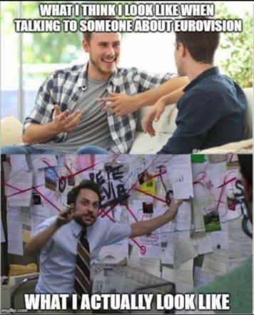

This is the chronicle of my ongoing adventures in onboarding my American peers into the world of Eurovision. It's a high-level highlight of primarily contemporary Eurivision songs and events, heavily biased to my personal tastes, and interests and almost certainly contains at least a couple of unintentional errors.
My goal with these articles is to show the fun of Eurovision while helping Americans move past the "LOL this is weird" stage responsible for work such as:
Colbert's very American Eurovision parody.And into a "Hell yes, this is weird!" stage of more profound Eurovision understanding.